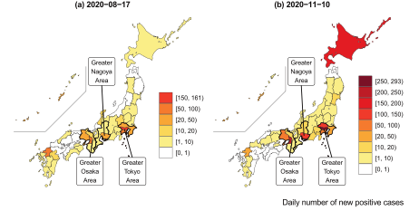
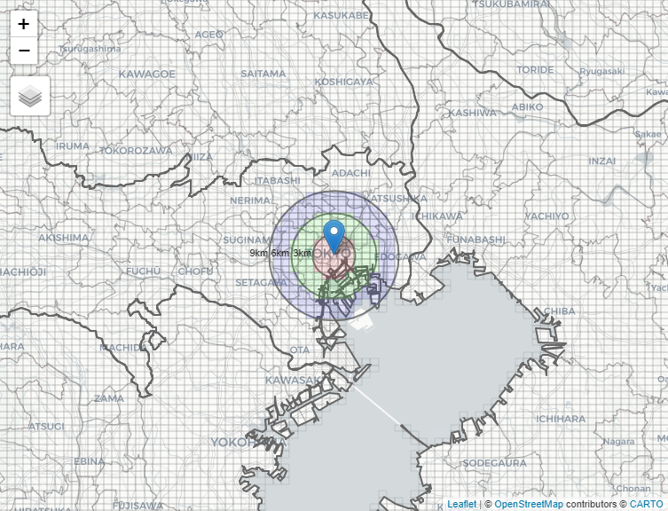
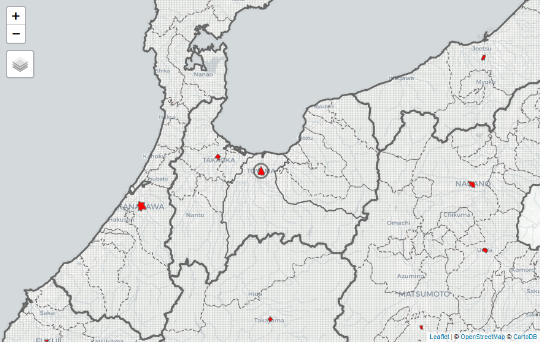
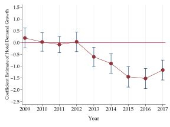
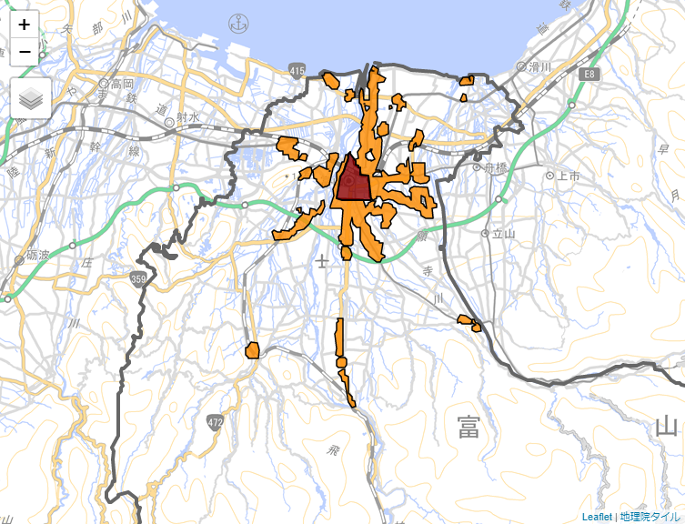
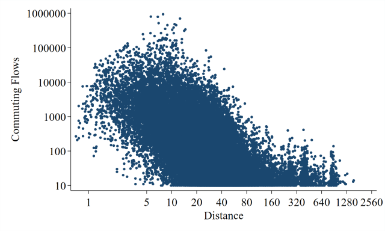
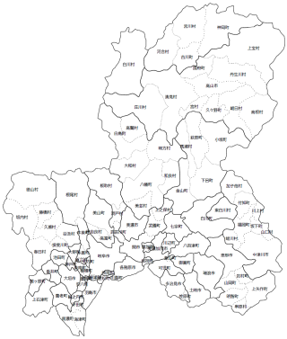
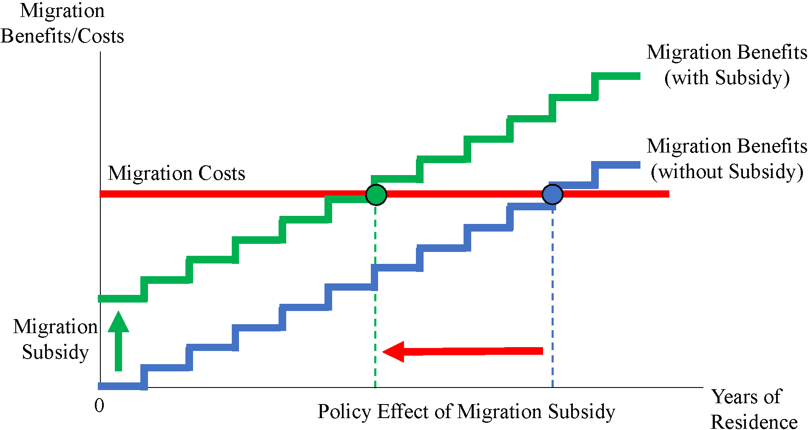
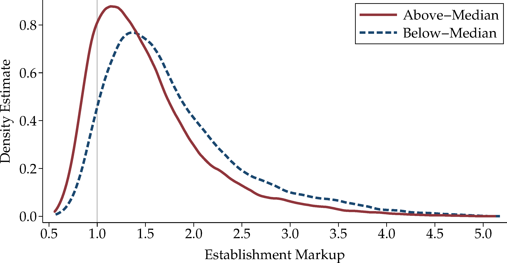

TABLE OF CONTENTS
This study develops a spatial Susceptible–Exposed–Infectious–Recovered (SEIR) model that analyzes the effect of interregional mobility on the spatial spread of the coronavirus disease 2019 (COVID-19) outbreak in Japan. National and local governments have requested that residents refrain from traveling between 47 prefectures during the state of emergency. However, the extent to which restricting the interregional mobility prevents infection expansion has not been elucidated. Our spatial SEIR model describes the spatial spread pattern of COVID-19 when people commute to a prefecture where they work or study during the daytime and return to their residential prefecture at night. We assume that people are exposed to infection risk during their daytime activities. According to our simulation results, interregional mobility restriction can prevent geographical expansion of the infection. However, in prefectures with many infectious individuals, residents are exposed to higher infection risk when their mobility is restricted. Our simulation results also show that interregional mobility restriction plays a limited role in reducing the national total number of infected individuals.
This study analyzes how local market size affects the probabilities of firm exit by focusing on single-establishment firms in the service sector. The novelty of this study is that it identifies geographic ranges of local markets using the matched data of geocoded firm location and micro-geographic data with detailed firm exit information of all Japanese firms. The results reveal that the probability of firm exit increases as local market size increases within a narrow range (3 km radius) in the service sector. We also find that small firms tend to leave the market. Our results suggest that firm selection is stronger in larger markets, where larger firms are more likely to survive.
This study evaluates urban policy on revitalization in city centers focusing on the Japanese service sector. Many Japanese cities have experienced a decline in population and economic activity in city centers. The 2006 Amended Act on Vitalization in City Centers shows a renewed effort toward city center revitalization. Local governments that applied for the related subsidies have implemented policies in targeted areas (generally, the area surrounding the main train station) to attract residents and employment from the suburbs and to revitalize economic activity. Using matching difference-in-differences estimations, this study finds that revitalization policies have improved the economic performance of service establishments only in city centers of regional core cities, but finds no evidence of similar effects in regional non-core cities.
This study evaluates urban policy on revitalization in city centers focusing on the Japanese service sector. Many Japanese cities have experienced a decline in population and economic activity in city centers. The 2006 Amended Act on Vitalization in City Centers shows a renewed effort toward city center revitalization. Local governments that applied for the related subsidies have implemented policies in targeted areas (generally, the area surrounding the main train station) to attract residents and employment from the suburbs and to revitalize economic activity. Using matching difference-in-differences estimations, this study finds that revitalization policies have improved the economic performance of service establishments only in city centers of regional core cities, but finds no evidence of similar effects in regional non-core cities.
This study evaluates the compact city policy of Toyama city, Japan, focusing on retail revitalization. To address future population aging and population decline, the "Toyama compact city model" aims at residential concentration in the city center and multiple areas in suburbs, with a public transport system that connects them. On the basis of the economics of density, retail revitalization is also expected from the residential and economic concentration in areas targeted by Act on Vitalization in City Center and Residential Promotion for Surrounding Public Transportation. Using matching estimation and difference-in-differences estimation with the panel data of incumbent retailers located in the targeted areas, which correspond to a treatment group, this study finds that the current framework of the "Toyama compact city model" does not produce the expected results for retail revitalization.
This study evaluates the disutility of long-distance commuting by structurally estimating a random utility model of commuting choice. Using estimated structural parameters for commuting preferences and considering the factors that produce heterogeneity across workers, the study quantifies the extent to which workers incur disutility from commuting under a counterfactual scenario in which they commute the same distance before and after marriage. Using inter-municipal commuting flow data in Japan, the counterfactual simulations uncover a significant gender gap in the disutility of commuting, particularly because having children after marriage greatly increases the disutility of commuting for female but not for male workers. Residential relocation plays a role in mitigating the disutility of commuting for female workers, implying that the additional disutility that arises after marriage can be offset through endogenous residential location choice.
This paper explains a method of constructing municipality-level panel data for Japan for the period of 1980–2015. Municipal mergers conducted around 2005, which are collectively known as "the Great Mergers in the Heisei era," resulted in a reduction of almost half of the number of Japanese municipalities. The significant changes in shapes of municipalities resulting from these municipal merges cause difficulties in constructing municipality-level panel data. To address this problem, this paper proposes a method of aggregating municipal districts from the past with geographical units that remain identical throughout the whole period.
This study analyzes interregional migration decision-making in terms of utility maximization. Given that indirect utility consists of real income and migration costs, migration decision depends on whether additional benefits of real income by migration at least offset the costs of migration. To quantify migration costs from interregional migration flow data, this study constructs a structural model of migration decision by incorporating different migration costs at each age of life. This study further discusses whether current migration policy is effective based on the counterfactual results since the Japanese government currently promotes urban-to-rural migration policy measures for regional revitalization in order to correct monopolar concentration in Tokyo.
This study empirically investigates how market size affects markups in the Japanese manufacturing sector. Recently developed models on monopolistic competition with endogenous price-cost markups show that markups in larger markets are lower because competition is stronger. This study proposes a new empirical approach to identify the effective geographical ranges of market competition that affect markups in the tradable goods sector. The approach in this study is novel because market size is measured as the market potential within the threshold distance from 100 km to 1,000 km. This study finds both the size of the market in closer proximity to the production location and the size of the distant market affect markups, suggesting that manufacturing establishments face stronger competition in geographically wider markets.
